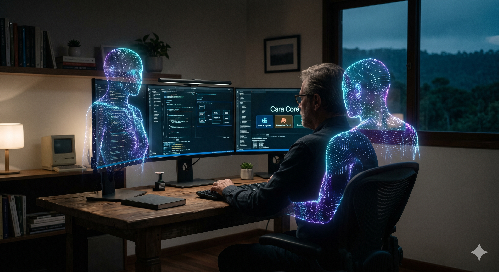

O Renascimento da Tecnologia Independente: Produto Real Antes do Discurso
O Encontro Inesperado
Recentemente, uma conversa que começou com um simples "parabéns" virou uma discussão sobre software independente, IA, portfólio, oficinas e a velha mania de vender futuro como se fosse entrega pronta.
Essa é a parte delicada. Em 2026, qualquer pessoa consegue escrever um texto bonito sobre soberania digital, autonomia local e ética tecnológica. Difícil é abrir o repositório da oficina e perguntar: o que existe de verdade? O que está em loja? O que está em matriz? O que é vitrine? O que é trilha evolutiva?
A Cara Core tem um ecossistema real. Justamente por isso, precisa falar dele com transparência. Produto forte não precisa pegar carona em promessa fraca.
1. Independência Não É Anti-Tudo
Existe um cansaço legítimo com plataformas gigantes, pay-to-play, algoritmo de vitrine e SaaS que trata o cliente como inquilino eterno. Mas tecnologia independente não nasce só da reclamação. Nasce de arquitetura, documentação, suporte e limite.
No ecossistema Cara Core, essa independência aparece em escolhas recorrentes: Java 21, JavaFX, Quarkus, Python, SQLite local, desktop Windows, documentação pública de releases, oficinas separadas e produtos com escopo definido.
O ponto não é dizer "nuvem nunca". O ponto é dizer: quando o problema pede operação local, dado local e continuidade em internet ruim, não faz sentido depender de uma arquitetura planetária para abrir uma agenda, vender no balcão ou revisar uma simulação.
2. O Ecossistema Sem Neblina
Vamos nomear as peças sem teatro.
PDV -> ponto de venda desktop: Java 21, JavaFX, Quarkus, SQLite local
Ink Agenda -> gestão para tatuadores: agenda, clientes, financeiro, JavaFX, SQLite
Circuito Ferradura -> formação em lógica, Python, jogos, IA aplicada, OIDC e certificado
ETE / Minerador 4.0 -> simulação educacional e P&D em hidrometalurgia, motor Python
Reino OIDC -> referência educacional para identidade federada e conceitos OIDC
Área 51 -> baseline técnica OIDC/OAuth/PKCE, validação, auditoria e suporte
Hub -> gestão logística e automação para e-commerce e marketplaces
CSO / Amarelinha -> gestão de entregas, telemetria, checkpoints e auditoria operacionalEssa lista é menos glamourosa do que dizer "um sistema soberano total". Também é mais honesta. Cada produto resolve uma classe de problema. Cada oficina guarda uma parte da maturidade técnica.
PDV não precisa virar Hub. Ink não precisa fingir que é CSO. Circuito não é Área 51. Minerador não é planta industrial. Reino OIDC não substitui implementação corporativa. Área 51 não é provedor de identidade. Hub não é governo. CSO não é curso escolar. Separar isso é respeito pelo cliente.
3. Soberania de Dados Com Pé no Chão
A frase "os dados pertencem ao cliente" é bonita. Mas precisa ser traduzida em arquitetura real. No PDV, significa SQLite local e operação desktop. No Ink Agenda, significa o estúdio conseguir abrir agenda, cliente e financeiro sem depender de internet. No Hub, significa operação logística com banco local e integração com marketplaces quando fizer sentido.
Isso não dispensa backup. Não dispensa suporte. Não transforma disco local em divindade. Só reduz dependência desnecessária e deixa claro onde a verdade operacional começa.
Para o Brasil real, essa escolha importa. Tem loja com internet instável, escola com computador modesto, estúdio que precisa trabalhar no sábado, laboratório que precisa repetir simulação e operação que não pode parar porque um serviço remoto tossiu em outro continente.
4. IA Como Ferramenta, Não Como Sócia Majoritária
A IA ajuda. Copilot, Cursor, modelos de linguagem e agentes aceleram documentação, revisão, testes e refatoração. Mas eles não substituem domínio. Não decidem escopo. Não conhecem a oficina melhor do que o repositório aberto na frente.
Um profissional sênior usando IA consegue manter um portfólio maior do que conseguiria sozinho em 2018. Mas "maior" não significa "sem limite". Significa que o trabalho precisa de ainda mais disciplina: separar matriz de loja, oficina de vitrine, protótipo de entrega e metáfora de produto.
5. Educação Lúdica Sem Confundir Produto
A conversa também destacou dois produtos educacionais que merecem nome correto: Reino OIDC e Circuito Ferradura. Um ajuda a explicar identidade federada, tokens e fluxos. O outro forma base em lógica, Python, jogos, IA aplicada, segurança digital, revisão e certificado.
É tentador chamar isso de entretenimento técnico. Pode até ser, em parte. Mas a função real é formação. Reino OIDC prepara entendimento conceitual. Circuito Ferradura prepara raciocínio computacional. Área 51 e produtos corporativos entram depois, quando o problema exige implementação, governança e auditoria.
Essa ordem evita confusão. Primeiro entende. Depois implementa. Primeiro pista. Depois estrada.
6. O Que Não Devemos Prometer
Não devemos prometer que um único desenvolvedor, mesmo com IA, substitui uma organização inteira em todos os contextos. Não devemos prometer que SQLite local resolve todo problema de dados. Não devemos prometer que desktop é melhor que nuvem em qualquer cenário. Não devemos prometer que curso de 40 horas forma sênior, que simulador substitui planta, que OIDC educacional é governança pronta ou que trilha evolutiva já é operação madura.
O que podemos dizer é mais forte: existe um portfólio consistente, com oficinas reais, tecnologias identificáveis, produtos em diferentes maturidades e uma filosofia clara de autonomia local quando ela faz sentido.
Isso é menos barulhento que hype. Também dura mais.
Lições Para Carreira e Negócio
- Construa antes de discursar: produto real aguenta leitura de README, teste, release e limitação.
- Documente maturidade: matriz, oficina, loja, vitrine e release não são a mesma coisa.
- Escolha tecnologia pelo problema: Java 21, Python, Quarkus, JavaFX e SQLite são ferramentas, não religião.
- Use IA com critério: ela acelera, mas quem responde pelo escopo é o arquiteto.
- Venda clareza: cliente compra melhor quando entende o que existe hoje e o que ainda é roadmap.
Conclusão
O futuro do software independente não está só nos grandes escritórios de vidro nem só no romantismo do desenvolvedor solitário. Está na oficina que entrega, no produto que explica, no dado que fica onde precisa ficar e na coragem de dizer "isso ainda não está pronto" quando ainda não está.
Esse é o renascimento que interessa: menos pose, mais produto. Menos neblina, mais README. Menos promessa universal, mais solução honesta para problema concreto.
Hashtags
Contato
- E-mail: suporte@caracore.com.br
- Site: www.caracore.com.br
- LinkedIn: Cara Core Informática
Artigo publicado em 3 de dezembro de 2026
© 2026 Cara Core Informática. Todos os direitos reservados.